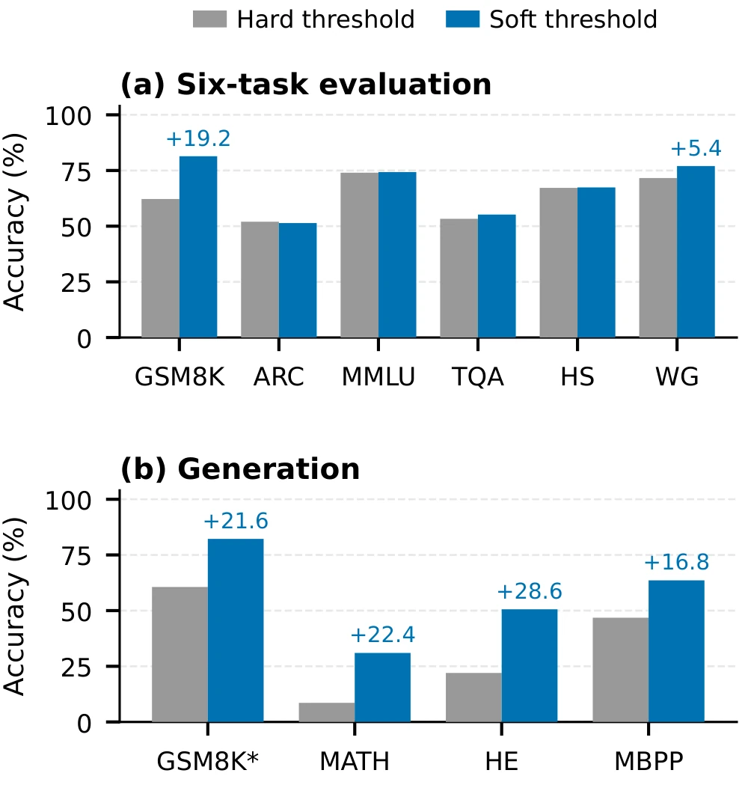

Predicting and Repairing Merge Collapse in Large Language Models
arXiv preprint
1Korea University 2Yonsei University Mirae Campus 3Sookmyung Women's University 4Konkuk University
†Corresponding authors
![Two panels. The top panel, Prior Methods (Prune-then-Merge), shows a blue Task Vector 1 and a red Task Vector 2 each passing through Independent Pruning, which leaves two grids of blocks with gaps, and the two grids are then added into one block of mixed blue and red cubes labelled Cross-model interaction ignored. The bottom panel, PRISM (Merge-then-Prune), shows Task Vector 1 with upward arrows and Task Vector 2 with downward arrows added first into a Norm-Scaled Aggregate, delta bar, shaded from blue to red. The aggregate passes through a Soft Thresholding plane, with lambda l equal to kappa times sigma l times the square root of 2 log n l, and comes out as a purple High-Signal Aggregated Vector.](assets/overview.webp)
Abstract
Large language models fine-tuned from a shared base can be merged by averaging their task vectors, but some merges collapse far below the base model, and common merge operators give no warning before evaluation. We show that one statistic of the specialists' task vectors both predicts this collapse and calibrates its repair. The power that averaging removes equals the variance of the task vectors across specialists, our measure of interference. Under a working noise model, the disturbance that a merge injects grows with the merge coefficient and with interference, yielding a pre-merge score. In our experiments on twenty-two merge configurations from four model families, only destructive merges exceed a threshold on this score. We find that statistics of sign conflict between specialists, a common target of existing merge operators, are anti-predictive. We then predicted the outcomes of fourteen merges before evaluating them, and twelve predictions were correct, including the destructive outcome of a specialist pair pushed past the threshold by continued pretraining. To address this collapse, we introduce PRISM, an operator that averages the task vectors first and then soft-thresholds each layer at a level set by the layer's interference. Without data or tuning, PRISM keeps all five destructive merges above the threshold within evaluation noise of the base model, where plain averaging falls at least 14.4 points below it or collapses entirely. We apply PRISM only above the threshold and keep the plain average for merges below it, which include all fifteen harmless ones. Code is available at https://
Interference Is the Cross-Model Variance
Let \(\theta_{\text{base}}\) denote the parameters of a pretrained base model and \(\theta_k\) those of specialist \(k\in\{1,\dots,K\}\), fine-tuned from it. The task vector \(\tau_k = \theta_k - \theta_{\text{base}}\) has value \(\tau_k(i)\) at coordinate \(i\). A merge rescales each task vector by a weight \(s_k>0\), set by norm scaling or to one in a raw merge, and averages them into \(\bar{\delta} = \frac{1}{K}\sum_k s_k \tau_k\). At coordinate \(i\) the total power \(P(i)\) splits into signal power \(S(i) = \bar{\delta}(i)^2\) and interference \(I(i) = P(i) - S(i)\), the reduction in mean-squared power due to averaging.
\[I(i) = \underbrace{\tfrac{1}{K}\sum_{k=1}^{K}\big(s_k \tau_k(i)\big)^2}_{P(i)} \;-\; \underbrace{\bar{\delta}(i)^2}_{S(i)} \;=\; \mathrm{Var}_k\big(s_k \tau_k(i)\big) \geq 0\]
This is the ambiguity decomposition of ensembles applied to the scaled task vectors, with the base model as the target. The variance measures task-vector disagreement, which the paper uses as a proxy for task interference, and is computed alongside the mean. Interpreting it as noise requires a model. Drift means the displacement \(s_k\tau_k\) of a specialist from the base. Identical scaled task vectors give zero interference regardless of the size or effect of their shared drift. Aligned vectors with unequal magnitudes can still have positive variance, as can one-sided drift, present in one specialist and absent in the others.
For a layer \(l\) with \(n_l\) merged coordinates, the means \(\overline{P}_l\), \(\overline{S}_l\) and \(\overline{I}_l\) give the coherence ratio \(\overline{\mathrm{CR}}_l = \overline{S}_l / (\overline{P}_l + \epsilon)\) and an interference scale \(\sigma_l^2 = \overline{I}_l = \overline{P}_l - \overline{S}_l\). The standard deviation \(\sigma_l=\sqrt{\overline{I}_l}\) has weight units and can set a threshold on task-vector coordinates. Computing these statistics takes about two CPU-minutes on a 7B model.
-
Pre-merge score
What a merge injects
The merge applies \(c\,\bar\delta\), where \(c\) is a global multiplier on the averaged task vector, by default \(c=1/K\). Assume that, at a coordinate of layer \(l\), the scaled task vectors share a signal and have independent, zero-mean disturbances of common variance \(v_l\). For a nonnegative coefficient \(c\), adding \(c\,\bar\delta\) introduces disturbance standard deviation \(c\sqrt{v_l/K}\) and power \(c^2v_l/K\). Using \(\overline{I}_l\) as an empirical proxy for \(v_l\) gives the screening scale
\[c\sqrt{\overline{I}_l/K}\]
available before merging. The estimated disturbance power of the mean update grows as \(c^2\) at fixed interference.
-
Cancellation ratio
Cancellation and dispersion
Low coherence has two causes. Cancellation is specialists writing comparable magnitudes with opposing signs, so the aggregate nearly vanishes. Dispersion includes one specialist writing a large value while the others sit near zero, task-exclusive drift that can carry useful signal. With \(\mathrm{Pos}(i)\) and \(\mathrm{Neg}(i)\) the positive and negative mass at coordinate \(i\), the cancellation power is
\[C(i) = \min\Big(\tfrac{2}{K}\min\big(\mathrm{Pos}(i),\mathrm{Neg}(i)\big)^2,\; I(i)\Big)\]
and \(D(i) = I(i) - C(i)\). Summing over all merged coordinates yields the empirical cancellation ratio
\[\textstyle \rho = \big(\sum_l n_l\overline{C}_l\big)\big/\big(\sum_l n_l\overline{I}_l+\epsilon_g\big)\in[0,1],\]
where \(\overline{C}_l\) is the mean of \(C\) over layer \(l\). High \(\rho\) marks a conflict-dominated merge and low \(\rho\) a dispersion-dominated one.
Repairing a Dangerous Merge with PRISM
PRISM averages first and shrinks the aggregate using the interference scale \(\sigma_l\), denoising the consensus with the Donoho–Johnstone universal soft threshold, used here as a tuning-free default.
-
Soft threshold
Interference-calibrated soft thresholding
\[\tilde{\delta}(i) = \operatorname{sgn}(\bar{\delta}(i)) \max\big(0,\, |\bar{\delta}(i)| - \lambda_l\big)\]
\[\lambda_l = \kappa\, \sigma_l \sqrt{2 \log n_l}\]
The threshold scale \(\kappa\) is fixed at 1.0. At fixed total power, high-coherence layers have smaller interference scales and thresholds. A coordinate survives only when its aggregate magnitude exceeds \(\lambda_l\), and its magnitude is then reduced by \(\lambda_l\). When fewer than 0.1% of a projection matrix's coordinates survive, a keep-rate floor lowers the threshold to the smallest magnitude among its top 0.1% and applies soft thresholding again.
-
Gate
The \(\rho\)-gate
For one-sided drift, where one specialist moves while the others do not, \(\sigma_l\) can be large even when the update carries useful specialist signal. The cancellation ratio \(\rho\) measures how much interference comes from opposing signs, so PRISM gates on it with a threshold \(\tau_g\).
\[\lambda_l = \begin{cases} \kappa\,\sigma_l\sqrt{2\log n_l} & \text{if } \rho \ge \tau_g, \\ 0 & \text{if } \rho < \tau_g, \end{cases} \qquad \tau_g = 0.1\]
Under dispersion, PRISM sets \(\lambda_l=0\), leaves the mean unchanged, and yields the Task-Arithmetic model with the same scaling and coefficient. With the reported ratios, any threshold strictly between 0.093 and 0.229 makes the same decisions as the default \(\tau_g=0.1\) on every setting of the paper.
The merged model is \(\theta_{\text{merged}} = \theta_{\text{base}} + c\,\tilde{\delta}\) with norm scaling \(s_k = \min_j \|\tau_j\|_2 / \|\tau_k\|_2\), so PRISM shrinks the aggregate once and then scales the resulting vector by \(c\). PRISM is applied to the multilayer perceptron (MLP) projections, and attention stays at its base values in the default comparison, since MLP layers are the primary locus of domain-specific knowledge. One threshold scale serves all settings without data or tuning.
The Same Scale Supports Pre-Merge Screening
The same \(\overline{I}\) that sets the threshold defines the pre-merge score \(c\sqrt{\overline{I}/K}\), computed with \(\overline{I}\) the parameter-count-weighted MLP mean interference. The paper tests whether this score separates destructive and harmless merges on twenty-two configurations across four families and \(K\in[2,8]\). Seven are destructive (perplexity \(>100\) or mean \(>10\)pp below base). Fifteen are harmless (within 1pp or better), with no intermediate cases. The score exceeds the threshold of \(1.9\times10^{-3}\) for five of the seven destructive merges and for none of the harmless ones.
![Five panels. Panel a plots densities of the score c times the square root of I bar over K on a logarithmic axis from 10 to the minus 6 to 10 to the minus 2. The blue harmless density lies below 10 to the minus 3, and the red destructive density has a tall peak to the right of a dashed vertical line, the frozen threshold, with two small bumps to its left. Panels b, c and d plot densities of rho, K, and c over the square root of K, where the harmless and destructive densities overlap. Panel e, Titration, plots the score against training tokens in billions on logarithmic axes. Black points at learning rate 10 to the minus 4 rise along a grey dashed fit to a large blue marker at 1 billion tokens below the dashed threshold, and purple points at learning rate 5 times 10 to the minus 4 then rise steeply past the threshold to a large red marker above a red dotted line that marks the destructive cluster.](assets/screening.webp)
Interference, total power and signal power reach AUC 0.98 or higher, and interference also sets the repair's variance scale. The two direction statistics, mean incoherence \(1-\overline{\mathrm{CR}}\) and \(\rho\), are anti-predictive, placing destructive merges below many harmless ones.
With the statistic, convention and threshold fixed, twelve of the fourteen predictions made before evaluation were correct across three model families, including the harmless and destructive endpoints of the constructed pair. On the other two merges predicted to be destructive, R1-Distill + Coder and Math-PRM + Coder, naive averaging falls 18.4 and 14.4pp below the base, whereas PRISM keeps both within 0.5pp of the base.
| Setting | \(K\) | \(c\) | \(\rho\) | \(c\sqrt{\overline{I}/K}\) \((\times10^{-3})\) | Base | TA | PRISM |
|---|---|---|---|---|---|---|---|
| naive averaging destroys the model | |||||||
| Qwen2.5-1.5B ja + med, constructed⋆ | 2 | 0.50 | 0.342 | 5.19 | 56.1 | 35.8 | 55.9 |
| Qwen2.5-1.5B Math + Coder | 2 | 0.50 | 0.246 | 4.94 | 56.3 | 37.1 | 55.8 |
| Qwen2.5-7B Math + Coder | 2 | 0.50 | 0.293 | 4.25 | 68.0 | 49.5 | 67.8 |
| Qwen2.5-7B R1-Distill + Coder⋆ | 2 | 0.50 | 0.291 | 4.24 | 68.1 | 49.7 | 67.7 |
| Qwen2.5-7B Math-PRM + Coder⋆ | 2 | 0.50 | 0.285 | 4.17 | 68.1 | 53.7 | 67.6 |
| Qwen2.5-7B Math + Finance⋆ | 2 | 0.50 | 0.036g | 0.653 | 68.1 | 37.0 | 37.0g |
| Qwen2.5-7B Coder + Coder-Instruct⋆ | 2 | 0.50 | 0.013g | 0.190 | 68.1 | 39.3 | 39.3g |
| merging is harmless | |||||||
| DeepSeek-7B math + chat | 2 | 0.50 | 0.348 | 0.228 | 46.8 | 48.1 | 46.6 |
| Qwen2.5-7B self-SFT at 10× learning rate⋆ | 2 | 0.50 | 0.349 | 0.227 | 68.1 | 68.8 | 68.2 |
| Llama-3.1-8B R1-Distill + Tulu-3⋆ | 2 | 0.50 | 0.346 | 0.089 | 59.3 | 62.6 | 59.6 |
| Qwen2.5-7B Aloe medical + Math⋆ | 2 | 0.50 | 0.279 | 0.082 | 68.1 | 68.0 | 68.1 |
| Qwen2.5-7B HuatuoGPT + R1-Distill⋆ | 2 | 0.50 | 0.349 | 0.076 | 68.1 | 68.9 | 68.1 |
| Qwen2.5-7B Math + Coder + Instruct | 3 | 0.33 | 0.443 | 0.042 | 68.0 | 68.6 | 68.1 |
| Mistral-7B MetaMath + Code | 2 | 0.50 | 0.093g | 0.030 | 57.4 | 59.9 | 59.9g |
| Qwen2.5-7B self-SFT, \(K=2\) | 2 | 0.50 | 0.333 | 0.027 | 68.1 | 68.4 | 68.2 |
| Mistral-7B SaulLM legal + BioMistral⋆ | 2 | 0.50 | 0.322 | 0.025 | 57.3 | 57.8 | 57.4 |
| Qwen2.5-7B Math + EVA roleplay⋆ | 2 | 0.50 | 0.229 | 0.019 | 68.1 | 68.1 | 68.1 |
| Llama-3.1-8B Swallow ja + Guard⋆ | 2 | 0.50 | 0.290 | 0.012 | 60.2 | 60.0 | 59.7 |
| Llama-3.1-8B OpenMath2 + Hermes-3 + Guard | 3 | 0.33 | 0.435 | 0.008 | 60.2 | 60.0 | 59.7 |
| Qwen2.5-7B off-the-shelf ×6 | 6 | 0.17 | 0.516 | 0.005 | 68.1 | 68.0 | 68.2 |
| Qwen2.5-7B self-SFT, \(K=8\) | 8 | 0.13 | 0.720 | 0.003 | 68.1 | 68.0 | 68.0 |
| Llama-3.1-8B Tulu-3 + Tulu-3-DPO⋆ | 2 | 0.50 | 0.003g | 0.002 | 59.3 | 64.5 | 64.5g |
Scroll sideways to see every column.
The interference score exceeds the threshold of \(1.9\times10^{-3}\) only for destructive merges. Means are six-task accuracies, and self-SFT specialists are fine-tuned by us from the base. ⋆Outcome predicted before evaluation. gGated, so PRISM equals Task Arithmetic (TA).
A controlled titration continued pretraining two Qwen2.5-1.5B specialists on disjoint Japanese web text and biomedical abstracts. At learning rate \(10^{-4}\), eight measured checkpoints follow an approximate square-root law through a harmless endpoint at one billion tokens for each specialist, and extrapolated, the fitted law crosses the threshold near 7.5 billion tokens. Continuing at 5× the rate reaches the destructive cluster within a further billion tokens and improves own-domain perplexity (Japanese 16.7 → 12.2, PubMed 7.2 → 7.0). As predicted before evaluation, the merge at this endpoint is destructive. Naive averaging loses 20.3pp against the base, while PRISM stays within 0.3pp of it.
The recipe uses naive averaging below the fixed score threshold and the gated shrinkage above it. All fifteen harmless configurations scored below the threshold and therefore keep the plain average, which scores 62.6 against the base's 59.3 on Llama-3.1-8B R1-Distill with Tulu-3. The twenty-eight public pairs without a code specialist that were screened across three families all scored below half the threshold.
Merging Under Severe Conflict
The merge studied most closely combines a math specialist with a code specialist, Qwen2.5-7B Math and Coder at \(K=2\). The evaluation covers six benchmarks under lm-evaluation-harness, plus WikiText-2 perplexity, and a six-task mean carries a propagated standard error of at most 0.8pp, so sub-pp gaps are treated as ties. PRISM leads Task Arithmetic, TIES and DELLA on the six-task mean by at least 6.7pp and exceeds calibration-guided LEWIS without using calibration data. Task Arithmetic falls to 13.4 on HumanEval, whereas PRISM leads every baseline on all four generation metrics, by at least 25.0pp on HumanEval.
| Method | Six-task evaluation | Generation | |||||||||
|---|---|---|---|---|---|---|---|---|---|---|---|
| GSM8K | ARC | MMLU | TQA | HellaS. | WinoG. | Avg. | GSM8K | MATH | HumanE. | MBPP | |
| Math specialist | 84.4 | 49.2 | 60.2 | 47.9 | 58.8 | 68.4 | 61.5 | 83.8 | 53.6 | 34.1 | 56.2 |
| Coder specialist | 81.8 | 49.0 | 69.5 | 49.8 | 66.4 | 72.0 | 64.8 | 82.4 | 41.4 | 59.8 | 68.4 |
| Task Arithmetic | 22.0 | 47.0 | 55.7 | 50.0 | 55.4 | 66.6 | 49.5 | 23.0 | 5.8 | 13.4 | 27.4 |
| TIES | 67.2 | 53.4 | 64.3 | 50.2 | 60.6 | 71.0 | 61.1 | 65.8 | 24.6 | 17.7 | 43.0 |
| DELLA | 65.2 | 51.6 | 64.2 | 50.3 | 59.8 | 70.4 | 60.3 | 64.0 | 22.0 | 17.7 | 42.4 |
| LEWIS† | 43.0 | 44.2 | 69.1 | 50.7 | 62.8 | 66.6 | 56.1 | 74.2 | 15.4 | 26.2 | 52.6 |
| PRISM (ours) | 81.4 | 51.4 | 74.3 | 55.2 | 67.4 | 77.0 | 67.8 | 82.4 | 30.2 | 51.2 | 62.8 |
Scroll sideways to see every column.
Qwen2.5-7B Math+Coder base checkpoints. Generation: GSM8K 5-shot, MATH-500 4-shot, harness HumanEval/MBPP pass@1 with completion prompts. LEWIS uses activation-based six-task/HumanEval/MBPP results and weight-sparsity GSM8K/MATH generation. Bold: best merged; underline: second best; †: calibration for activation-based LEWIS.
The setting repeats on Qwen2.5-1.5B with instruction-tuned checkpoints, where Task Arithmetic collapses outright and PRISM leads the strongest baseline by 3.5pp. Instruct + Coder-Instruct merges at 3B and 14B score far below the threshold, and the plain averages that the recipe keeps gain 0.8 and 1.0pp over the base.
Robustness to the Scaling Coefficient
Under the working model, injected interference power grows as \(c^2\), and PRISM shrinks the update before applying the coefficient. Across the sweep, PRISM holds a 64.8–68.0% mean. At \(c=0.7\), the four evaluated baselines sit 19 to 33 points below the base at perplexities from 100 to 961. In the generation evaluation at \(c=1.0\), Task Arithmetic, TIES and DELLA score zero on GSM8K. The best baseline in the plotted sweep, LEWIS at 67.6 (\(c=0.3\)), is tied within evaluation uncertainty with the 67.8 that untuned PRISM posts at the shared default.
![Two line plots of accuracy against the coefficient c at 0.3, 0.5, 0.7 and 1.0, with a shaded collapse zone, perplexity above 100, from c equal to 0.7 onward. Panel a, six-task mean: PRISM stays near 68 percent and ends near 65, the norm-matched control squares sit near 68, and Task Arithmetic falls from about 63 to below 30, while TIES, DELLA and LEWIS fall to between about 30 and 39 at c equal to 1.0. Panel b, generation, GSM8K and MATH mean: PRISM falls from about 58 to about 39 percent, LEWIS from about 52 to about 9, TIES and DELLA reach 0 at c equal to 1.0, and Task Arithmetic reaches 0 at c equal to 0.7.](assets/sweep.webp)


On the same merge, soft thresholding beats hard truncation at the same threshold by 4.4pp on the six-task mean. Truncation's cost falls almost entirely on tasks that produce text, at 19.2pp on GSM8K and up to 28.6pp on HumanEval against 1.4pp averaged over the five multiple-choice benchmarks. Across threshold scales from \(\kappa=0.25\) to 3, the six-task mean varies by at most 0.5pp, and the default scores highest.
Is It Just Conservative Shrinkage?
A control matched to the update norm of PRISM tests whether generic shrinkage explains the preserved capability. The baseline operators and community defaults write updates with 46 to 285% of the norm of the plain average, while PRISM writes 2.2%. For the matched control, one scalar multiplies every coordinate of the plain average to reach the same norm.
| Method | Norm | Coords | Mean | PPL | Coding (EvalPlus) | ||||
|---|---|---|---|---|---|---|---|---|---|
| \(\|\delta\|/\|\bar\delta\|\) | % | \(c=0.5\) | \(c=1\) | \(c=1\) | HumanEval | HumanEval+ | MBPP | MBPP+ | |
| Base model, unmerged | 0 | 0.0 | 68.0 | 68.0 | 8.6 | 62.8 | 57.9 | 69.8 | 59.5 |
| Task Arithmetic | 1.00 | 99.7 | 49.5 | 28.8 | 4.6×105 | 0.0 | 0.0 | 0.0 | 0.0 |
| TIES | 0.80 | 34.8 | 61.1 | 30.4 | 1.1×104 | 0.0 | 0.0 | 0.0 | 0.0 |
| DELLA | 0.82 | 34.9 | 60.3 | 30.9 | 1.6×104 | 0.0 | 0.0 | 0.0 | 0.0 |
| DARE (drop 0.9)§ | 2.85 | 19.0 | 30.0 | 29.8 | 7.2×106 | 0.0 | 0.0 | 0.0 | 0.0 |
| LEWIS† | 0.55 | 5.0 | 56.1 | 38.7 | 5.9×103 | 0.0 | 0.0 | 0.3 | 0.0 |
| SLERP (\(t=0.5\)) | 1.27 | 99.9 | 30.0 | 1.0×106 | 0.0 | 0.0 | 0.0 | 0.0 | |
| Model Stock | 0.46 | 99.6 | 53.2 | 35.0 | 0.6 | 0.6 | 0.0 | 0.0 | |
| Uniform, norm-matched | 0.022 | 85.1 | 68.1 | 68.0 | 8.7 | 62.2 | 57.3 | 69.6 | 59.0 |
| Hard threshold, same \(\lambda\) | 0.126 | 0.1 | 63.4 | 57.2 | 18.4 | 51.8 | 48.2 | 60.1 | 51.6 |
| PRISM | 0.022 | 0.1 | 67.8 | 64.8 | 11.1 | 65.9 | 59.1 | 71.2 | 61.1 |
Scroll sideways to see every column.
Qwen2.5-7B Math+Coder. Coding: vendor-native EvalPlus pass@1 at \(c=0.5\) where applicable, not comparable with the table in Merging Under Severe Conflict. LEWIS: activation-based Mean/PPL, weight-sparsity fallback for Norm/Coords/Coding. Bold: above the unmerged base. §: rescaled; †: calibration for activation-based LEWIS; SLERP and Model Stock: no coefficient.
The norm-matched control avoids collapse at both evaluated coefficients and stays close to the unmerged base on the six-task mean, perplexity and all four coding metrics. Its norm, however, is taken from PRISM, whose thresholds set that norm from each layer's interference without data or tuning. Where the control spreads this norm across 85.1% of the coordinates, PRISM concentrates it on the 0.1% retained by thresholding. The coding scores of PRISM are higher than both the control's and the base's on all four EvalPlus metrics, reaching 65.9 on HumanEval against 62.2 and 62.8. Model Stock applies 2.4× interpolation shrinkage toward the base and still loses 14.8pp.
Data-dependent baselines need data to reach parity. AdaMerging reaches 67.9 at its best point, a tie with the 67.8 of PRISM, after entropy minimization on unlabeled C4 text and a coefficient sweep.
BibTeX
@misc{lee2026prism,
title = {Predicting and Repairing Merge Collapse in Large Language Models},
author = {Jungseob Lee and Seungyoon Lee and Sugyeong Eo and Hyeonseok Moon and Jaehyung Seo and Heuiseok Lim},
year = {2026},
journal = {arXiv preprint},
eprint = {2610.03199},
archivePrefix = {arXiv},
url = {https://arxiv.org/abs/2610.03199},
}